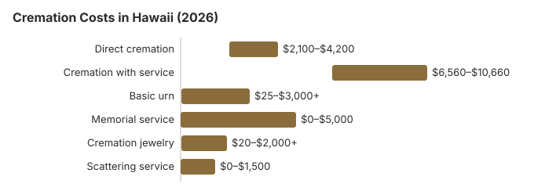

Cremation Costs in Hawaii (2026)
About 70% of Hawaii deaths end in cremation on this site's figures. We estimate direct cremation at about $3,000 and cremation after a full funeral at about $8,200. Hawaii has no waiting period, but a body must be embalmed, cremated or buried within 30 hours of death unless it is refrigerated, and the burial-transit permit cannot issue until the death certificate is filed. This page covers those rules, the state payment for unclaimed remains, scattering at sea and the veterans cemeteries.
Cremation Choices Offered in Hawaii
Direct Cremation
- Least expensive in Hawaii
- No gathering ahead of time
- Body goes from the place of death to cremation
- Urn comes back to the family
- Celebration of life can follow
Cremation with Service
- Service comes before the cremation
- Visitation can be arranged
- Held at a chapel or church
- Urn often part of the package
- Feels like a traditional funeral
Cremation Cost Breakdown
| Line item | Hawaii estimate | Range we use |
|---|---|---|
| Direct cremation | $3,000 | $2,100 – $4,200 |
| Cremation with service | $8,200 | $6,560 – $10,660 |
| Basic urn | $50 – $300 | $25 – $3,000+ |
| Memorial service | $500 – $2,000 | $0 – $5,000 |
| Cremation jewelry | $50 – $500 | $20 – $2,000+ |
| Scattering service | $200 – $600 | $0 – $1,500 |
How we got the Hawaii figures: from our cost model, not a canvass of island crematories, so use them to judge quotes; they are not a quote or advice. See our method and the disclaimer.
State sources: Hawaii Department of Commerce and Consumer Affairs (DCCA); Haw. Rev. Stat. § 346-15; HAR ch. 17-1745.

Holding Down a Hawaii Cremation Bill
Cremation costs in Hawaii can be reduced with these strategies:
- Ask several providers for price lists. Under the FTC Funeral Rule a Hawaii funeral home must give its General Price List on request and quote prices by phone.
- Compare written direct cremation quotes: even the most basic Hawaii cremation runs around $3,000 on this site's estimates, so knowing exactly what each price covers matters more than haggling over it. Ask how long the ashes take to come back and whether the provider can arrange a scattering at sea.
- Plan the scattering yourself. Ask the landowner, or the agency that manages a park or forest, before scattering on land; at sea, the federal rule below applies whether or not a paid service is used.
For ways to bring a Hawaii cremation bill down, see our affordable funeral options guide or learn how to pay for a funeral with no money.
Checks to Make Before a Cremation in Hawaii
Before you sign in Hawaii:
- Where the ashes go. The remains come back in the container you choose. An eligible veteran's urn can be placed at the Hawaii State Veterans Cemetery or the National Memorial Cemetery of the Pacific without charge for the space.
Scattering Ashes at Sea Off Hawaii
Many Hawaii families scatter ashes in the ocean. The EPA's general permit lets cremated remains be placed in the sea at least three nautical miles from land, with no flowers or wreaths that will not decompose, and the person arranging it must report the burial to the EPA within 30 days (40 CFR 229.1). Ask a charter or provider whether it files that report for you.
Cremation Resources
- Funeral Consumers AllianceNonprofit advocacy: compare cremation providers
- Cremation Jewelry GuideMemorial keepsakes and remembrance options
- Cremation vs. Burial CostsSide-by-side cost comparison
- Pet Cremation CostsOptions and prices for pet cremation and memorials
- Final Expense InsuranceCoverage options to help pay for cremation costs
Compare Funeral Costs
- Average Funeral Cost in 2026National cost breakdown with real prices
- Cremation vs. Burial Cost ComparisonSide-by-side price comparison to help you decide
- Funeral Cost BreakdownEvery line item explained: know what you're paying for
- Cheapest Funeral OptionsLower-cost alternatives, with typical price ranges
- Direct Cremation: Most Affordable OptionNFDA 2023 median $2,645 with a family-supplied container (latest available)
- How to Compare Funeral PricesStep-by-step guide to getting the best price
Frequently Asked Questions
How much does a Hawaii cremation run?
We estimate about $3,000 for a Hawaii direct cremation, covering transport, the cremation and the return of the ashes, and about $8,200 when a funeral with a viewing comes first.
What kinds of cremation services can I choose in Hawaii?
A Hawaii cremation can take one of three shapes. Direct cremation, around $3,000, is the cremation alone. A memorial comes after the cremation, at a place the family picks, and is priced between the two ends. A full funeral with viewing before cremation runs about $8,200.
What are Hawaii's cremation regulations?
Hawaii sets no waiting period, so timing depends on paperwork: the crematory needs the filed death certificate, the health department permit and a signed authorization. The person who signs is set by HRS § 531B-4, which starts with someone the deceased designated in writing, then a spouse or reciprocal beneficiary, then children, parents and siblings. The rules section lower on the page lists the statute and the complaint line.
Where are ashes allowed to be scattered in Hawaii?
Hawaii scattering rules depend on the specific location. Families in Hawaii also often opt for columbarium niches, burial of the urn, or keepsake jewelry in place of scattering.
Why do most Hawaii families choose cremation?
Cost is one reason: on our estimates a direct cremation runs about $8,000 less than a traditional Hawaii funeral with burial, and the ocean gives families a place to scatter.
How quickly can a Hawaii cremation happen?
Paperwork sets the pace. There is no minimum wait, but the permit cannot issue until the death certificate is filed (HRS §§ 338-23, 338-25), and the 30-hour rule means a body waiting longer must be refrigerated. Direct cremation, about $3,000, has no service to schedule.
Can there be a viewing before a Hawaii cremation?
Yes. Providers can rent a casket so the family can view the body first, but a body kept past 30 hours must be embalmed or refrigerated (HAR § 11-22-4), and the permit still needs a filed death certificate (HRS §§ 338-23, 338-25).
More for Hawaii
Hawaii's burial-transit permit and 30-hour rule
In Hawaii the permit that allows a cremation is the burial-transit permit issued by the local agent of the Department of Health, and it cannot be issued until the death certificate has been filed as far as it can be completed and the department's rules are met (HRS § 338-25). If the circumstances suggest death was not natural, the local agent refers the case to the coroner first.
- The clock: unless the coroner or medical examiner has custody, a body must be embalmed, cremated or buried within 30 hours of death; after a coroner's release, the same 30 hours run from the release, or the body goes into refrigerated storage at a state-approved hospital (HAR § 11-22-4; checked October 29, 2026).
- Who the "coroner's physician" is: on Oahu it is the Honolulu medical examiner or an assistant; on Hawaii Island, Maui and Kauai it is a government physician the coroner designates (HRS § 841-18).
Hawaii cremation oversight and state help
Complaints about a Hawaii cemetery or a prepaid funeral plan seller go to the Regulated Industries Complaints Office (808-586-2670) of the Hawaii Department of Commerce and Consumer Affairs (DCCA), which licenses both through its program at 808-586-3000.
The Funeral Consumers Alliance does not list Hawaii as a state that requires a funeral director, though a crematory will still want the death certificate, the permit and the next of kin's signature.
No waiting period applies; the health department permit waits only for the filed death certificate (HRS §§ 338-23, 338-25).
Unclaimed remains
When no one claims a body, Hawaii has it cremated, and DHS pays the provider its cost or $1,600, whichever is lower, if the provider applies within 60 days of death (Haw. Rev. Stat. § 346-15; HAR ch. 17-1745). Social Security's $255 goes only to an eligible spouse or child who claims within two years.
Veterans
Urns are accepted at the Hawaii State Veterans Cemetery (808-369-3575), the National Memorial Cemetery of the Pacific (808-532-3720, cremated remains only) and Kauai Veterans Cemetery (808-241-4460), with the niche or grave and marker free for an eligible veteran; see cem.va.gov.
Hawaii checklist
- Get at least two written direct cremation prices and compare what each covers.
- Ask when the permit will issue, and whether refrigeration is charged after 30 hours.
- For a scattering at sea, decide who files the EPA report.
- Report misquoted cemetery or prepaid-plan prices to 808-586-2670.